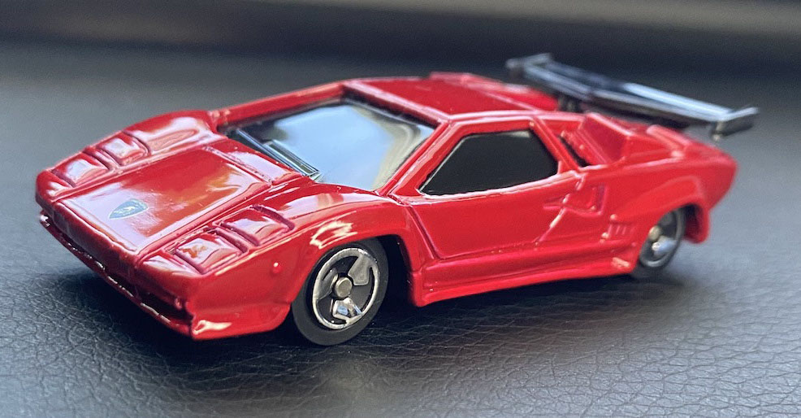

My opinions about infrastructure and zoning have been steadily radicalizing to
an anti-car, pro-public transportation stance that compliments my support of
sustainable “solarpunk”-style ideology. While I now idolize cities where
bikes, trains, and walking are safe, affordable, and efficient alternatives to
cars, my lifelong appreciation of car design persists in my hobby of
collecting miniature car models.
Cars are machines, and like virtually all other machines that have existed
throughout time, the car will eventually be eclipsed by something superior. I
still enjoy being enthused about their history and design without hindering
their gradual path to obsolescence.
✦ '64 Corvette Sting Ray (Hot Wheels)

✦ '06 Pontiac GTO (Hot Wheels)
✦ '65 Impala (Hot Wheels)
✦ 2020 Jaguar F-TYPE (Hot Wheels)
✦ Custom '70 Honda N600 (Hot Wheels)

✦ Jaguar XE SV Project 8 (Hot Wheels)
✦ McLaren Speedtail (Hot Wheels)
✦ Volvo 850 Estate (Hot Wheels)
✦ '57 Chevrolet Corvette (Maisto)
✦ 1955 Chevrolet Bel Air (Maisto)
✦ 1957 Chevy Pickup (Maisto)
✦ 2009 Nissan 370Z (Maisto)
✦ '57 Chevrolet Corvette (Maisto)
✦ Lamborghini (Maisto)

✦ 1932 Ford Coupe Model B (Matchbox)
✦ 1971 MGB GT Coupe (Matchbox)
✦ 1976 Honda CVCC (Matchbox)
✦ 1995 Nissan Hardbody D21 (Matchbox)
✦ 2016 Alfa Romeo Giulia (Matchbox)
✦ 2020 Honda E (Matchbox)
✦ VW Golf V GTI (Matchbox)
✦ Subaru Sambar Truck (Mattel)
✦ Aquarium Truck (Takara TOMY)